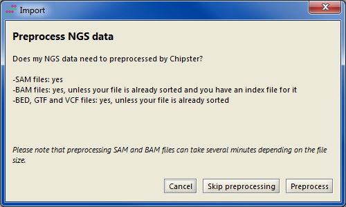
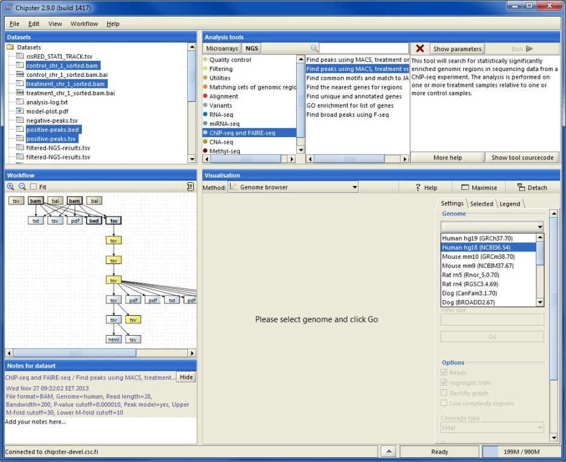
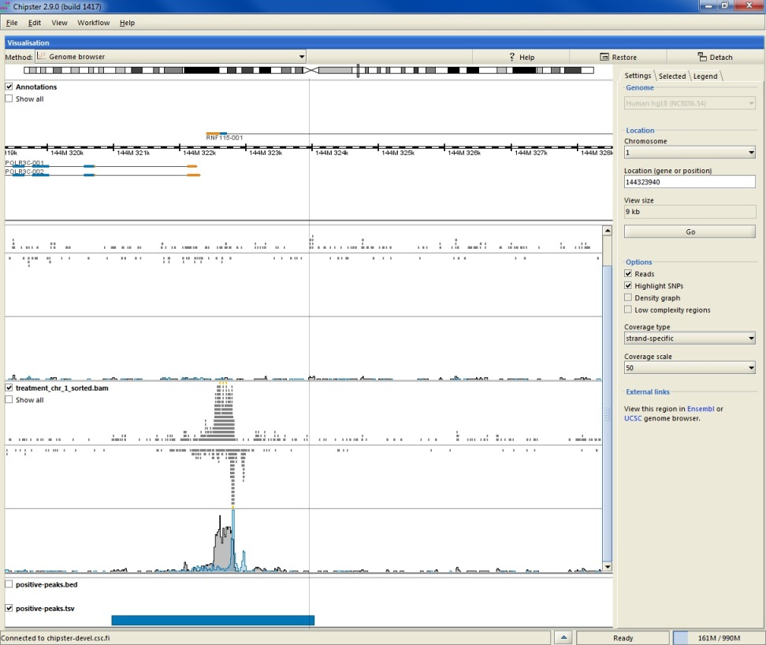
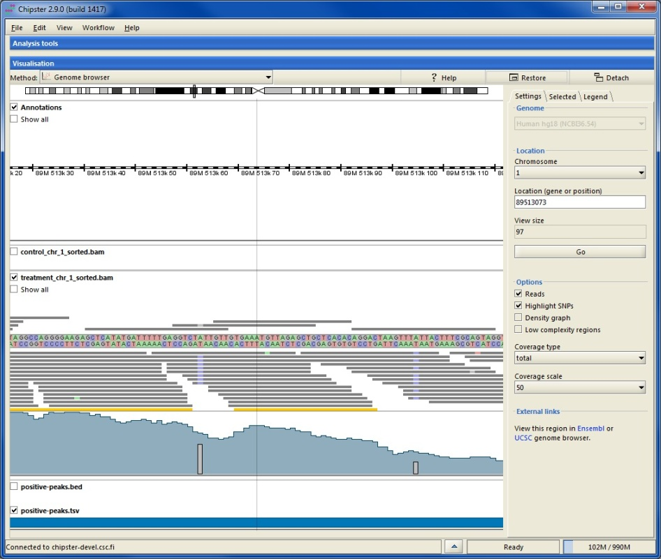
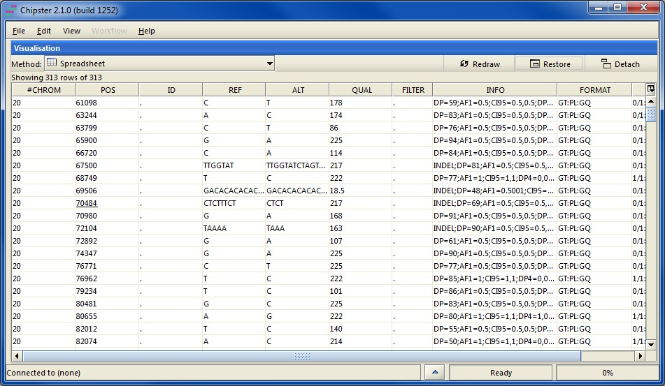

Chipster genome browser enables you to view next generation sequencing data and results in their genomic context using Ensembl annotations. This interactive visualization allows you to zoom in to nucleotide level, view coverage, highlight SNPs, and view spliced reads (RNA-seq). The genome browser is available both as an integrated visualization in Chipster and as an individual application (shown in this tutorial). The data used in this tutorial comes from the STAT1 ChIP-seq experiment by Rozowsky et al (Nat Biotechnology 2009, 27:66-75).
Chipster genome browser supports SAM, BAM, BED, GTF and VCF files as well as tsv, where the first three columns are chr, start and end. SAM files need to be converted to BAM, BAM files need to be sorted and indexed, and BED, GTF and VCF files need to be sorted. All this is accomplished during the data import step with Chipster preprocessor. If your data is already in the right format and your BAM file has the matching index file (.bai), you can skip the preprocessing step and import your data directly.
When the files have been imported, they appear as filenames in the Datasets panel and as boxes in the Workflow panel. In order to select files for viewing, click on them in either of these panels. You can select several files by keeping the control key down. Note that if you want to view a BAM file, you also have to select its index file (.bai). Click on the "Open genome browser" link or select "Genome browser" as the visualisation method from the pulldown menu.
Next you need to select the matching genome from the settings panel. If you are using the genome browser for the first time, you are asked to download annotations for the selected genome. Using downloaded gene and transcript annotations ensures optimal performance, and you need to download them only once. However, it is also possible to opt for using gene and transcript annotations over the internet. The actual genome sequence is by default used over the internet.
When zoomed in, alignment tracks display the actual reads instead of sampling summaries. Reads colored in yellow mean that the pile of reads is truncated at that point. In order to view all the reads, please tick the box "Show all reads" in the side panel (in order to move around again, you have to switch off the full height mode). At this level the automatically calculated coverage tracks are also shown. You can use the side panel Options to change their scale, to switch them off, or to select total or strand-specific coverage. You can also select to view coverage as a density graph instead of a profile. This is a very compact way of viewing data and hence handy for a large number of samples.
At this zoom level the annotation track displays transcripts instead of genes. Translated regions are colored in blue and untranslated in yellow (please see the legend tab). Areas detected by the RepeatMasker program are shown as grey lines below the ruler in the annotation track.
When zoomed in to the nucleotide level, reads are colored according to their nucleotide content (please see the legend tab). You can also choose to color only those bases which differ from the reference sequence by selecting the "Highlight SNPs" option. When this option has been selected, colored bars will be added to the coverage track on those positions, where more than 20% of the bases differ from the reference.
If you would like to check the content of your BAM, BED, VCF or tsv files, you can select the visualization method "BAM viewer" or "Spreadsheet". Note that in the spreadsheet view you can sort the data by clicking on a column name. BED and VCF files can be also used for navigation as described earlier.
When you finish viewing your data, you can save the session by selecting "File / Save session". Saving your preprocessed data files this way allows you to continue with them next time. You can name the session file anything you like, but the ending has to be .zip. If you would like to save an individual preprocessed file, please right-click on it in either Datasets or Workflow panel and select "Export".
This visualization uses the Picard package.
Please see the Picard homepage for more details.